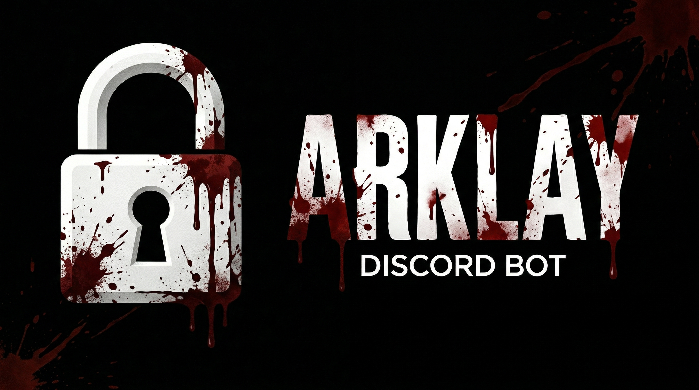

1 Overview
Arklay is an open-source modular Discord bot built with TypeScript and discord.js v14. It provides 99 slash commands across 6 independent modules: music player, AI assistant, moderation, utility, fun, and server configuration.
Music is powered by Lavalink + Shoukaku with SoundCloud as the primary streaming source.
AI supports 4 providers: Claude (Anthropic), Gemini (Google), ChatGPT (OpenAI), and local
models via Ollama. All state persists via SQLite. Supports both slash commands and text prefix
(.command or arklay command). Reply to any AI message to continue
the conversation.
Available at github.com/StealthyLabsHQ/arklay-bot.
2 Modules
2.1 Music (27 commands)
Lavalink + Shoukaku music player supporting YouTube, Spotify, and SoundCloud. Persistent Now Playing embed with interactive buttons and filter dropdown. Queue auto-resumes after restart. Auto-disconnects after 5 minutes of inactivity. SoundCloud is the primary source, YouTube as fallback. If Lavalink is not running, music commands are gracefully disabled.
| Command | Description |
|---|---|
/play [query] | Play from YouTube, Spotify or SoundCloud (supports playlists, albums, YouTube Mixes) |
/pause | Pause playback |
/resume | Resume playback |
/skip | Skip to next track |
/skipto [position] | Skip to specific queue position |
/previous | Play previous track again |
/stop | Stop and clear queue |
/queue | Show queue with pagination buttons |
/nowplaying | Current track with interactive player buttons |
/replay | Restart current track from beginning |
/loop [off/track/queue] | Set loop mode |
/volume [0-100] | Set playback volume (preserves position) |
/shuffle | Shuffle the queue |
/move [from] [to] | Move a track to a different position |
/remove [position] | Remove track by position |
/save | DM yourself the current track |
/lyrics [search] | Lyrics with optional AI explain button |
/seek [timestamp] | Jump to position (e.g. 1:30) |
/filter [type] | Audio filters: bassboost, nightcore, vaporwave, 8d, slowed_reverb, speed_reverb, treble, karaoke, deepbass, chipmunk |
/autoplay | Toggle autoplay - auto-add similar tracks when queue ends |
/favorites add|list|play|remove|clear | Save, browse, and play your favorite tracks |
/playlist create|save|load|show|list|delete | Personal playlists - save queue, load later |
/history | Show the 20 most recently played tracks |
/247 | Toggle 24/7 mode - bot stays in voice channel |
/lyrics-translate [language] | Translate the current track's lyrics |
/stats | Server music statistics (top tracks, top listeners) |
/recommend | AI recommends tracks based on your queue and history |
2.2 AI (16 commands)
Multi-provider AI system: Claude (Anthropic), Gemini (Google), ChatGPT (OpenAI: GPT-5.4 Nano/Mini, Codex, o4 Mini), and local models via Ollama. Per-user model selection stored in SQLite. Conversation history per user per guild. Daily usage limits per model with configurable owner multiplier. Reply to any AI message to continue the conversation.
| Command | Description |
|---|---|
/ask [question] [provider] [image] | Ask Claude, Gemini, ChatGPT, or local AI (optional image for vision) |
/summarize [messages] [provider] | Summarize recent channel messages |
/tldr [url] | Summarize a webpage |
/nanobanana [prompt] [image] | Generate images with Gemini (Nano Banana 2) |
/setmodel cloud|local|show|reset | Choose AI model (cloud: Claude/Gemini/ChatGPT, local: Ollama) |
/translate [language] [text] | AI-powered translation |
/roast [user] | Contextual AI roast using target's recent messages |
/vision [image] [prompt] | Analyze an image with AI |
/catchup | AI-powered summary of recent channel activity |
/code [prompt] [model] [file] | Generate or analyze code (temp 0, full reasoning) - supports file/image upload |
/cloudai prompt|reset-prompt|status | View/set custom system prompt for cloud AI (owner only) |
/localai prompt|knowledge-add|knowledge-list|thinking|status | Local AI config and RAG knowledge base (owner only) |
/persona set|custom|show|reset | Set AI personality (pirate, yoda, sarcastic, custom...) |
/explain [topic] [level] | Explain a topic (like I'm 5, beginner, intermediate, expert) |
/debate [topic] | Watch two AIs debate a topic |
/llm | Show your current AI model, provider, and usage limits |
2.3 Moderation (12 commands) - Admin only
Admin-only module. Uses a custom admin role system via /botrole. Discord
Administrator permission always grants full access. Admin roles stored in SQLite per guild.
| Command | Description |
|---|---|
/timeout [user] [duration] [reason] | Timeout a user |
/ban [user] [reason] [delete_history] | Ban a user |
/unban [userid] [reason] | Unban a user |
/kick [user] [reason] | Kick a user |
/warn add/list/clear [user] | Warning system |
/mute [user] | Server mute/unmute in voice |
/role [user] [role] | Toggle a role on a user (add or remove) |
/clear [amount] | Delete 1-100 messages |
/lockdown [channel] | Toggle channel lockdown |
/slowmode [seconds] | Set slowmode |
/nuke | Delete and recreate a channel |
/botrole add/remove/list | Manage bot admin roles |
2.4 Utility (25 commands + 1 context menu)
| Command | Description |
|---|---|
/help [command] | Interactive help center with dropdown categories and command details |
/botinfo | About Arklay - developer, stats, and social links |
/ping | Bot latency |
/userinfo [user] | User info (status, badges, roles, permissions, activity) |
/serverinfo | Server statistics |
/avatar [user] | Full-size avatar |
/banner [user] | User banner |
/roleinfo [role] | Role details |
/channelinfo [channel] | Channel details |
/membercount | Server member count |
/invite | Bot invite link |
/math [expression] | Calculator |
/define [word] | Dictionary lookup |
/crypto [coin] | Cryptocurrency prices |
/weather [city] | Current weather |
/afk [reason] | Set/remove AFK status |
/remindme [duration] [message] | Reminder (max 24h) |
/poll [question] [options] | Interactive button poll |
/emoji [emoji] | Emoji info and full-size image |
/steal [emoji] [name] | Add external emoji to server |
/snipe | Show last deleted message in channel |
/editsnipe | Show previous version of last edited message |
/color [hex] | Preview a color with hex and RGB values |
/timestamp [date] | Convert date to all Discord timestamp formats |
/screenshot [url] | Take a screenshot of a website |
/qrcode [text] [size] | Generate a QR code |
| Context menu: "Steal Sticker" | Right-click any message to add its sticker to the server |
2.5 Fun (12 commands)
| Command | Description |
|---|---|
/8ball [question] | Magic 8-ball |
/choose [options] | Random pick from comma-separated options |
/coinflip | Flip a coin |
/dice [count] [sides] | Roll dice |
/trivia [category] | Trivia with buttons (includes AI-generated category) |
/meme [search] | Random meme from Reddit with optional search |
/gif [query] [mode] | Search GIFs via Giphy (search, exact, random) - requires GIPHY_API_KEY |
/guesssong | Guess the song from a hint (requires active music queue) |
/rps [choice] | Rock paper scissors vs bot |
/rate [thing] | Rate anything 0-10 with progress bar |
/how [trait] [thing] | Fun percentage (e.g. "how cool is @user") |
/quote | Random inspirational quote |
2.6 Configuration (7 subcommands) - Admin only
| Command | Description |
|---|---|
/config autorole [role] | Auto-assign role to new members (omit to disable) |
/config welcome [channel] [message] | Set welcome message ({user} and {server} placeholders) |
/config logs [channel] | Set mod log channel |
/config tempvc [channel] | Set hub channel for temporary voice channels |
/config automod [on/off] | Toggle AI auto-moderation (Gemini-based) |
/config language [lang] | Set bot language (13 languages: en, fr, es, de, pt, it, nl, ru, ja, ko, zh, ar, tr) |
/config show | Show current configuration |
3 Automatic Features
Event-driven behaviors that require no slash command:
- Auto-role - assigns a role to every new member when configured via
/config autorole - Welcome messages - greets new members with customizable text (
{user}and{server}placeholders) - Temporary voice channels - joining a hub channel creates a personal VC, auto-deleted when empty
- Message logging - deleted and edited messages logged to mod channel
- AI auto-moderation - optional Gemini content scanning (debounced), logs flagged content
- Music auto-resume - queue automatically restores after bot restart
- Music auto-disconnect - bot leaves voice after 5 minutes of inactivity
- Snipe tracking - last deleted and edited messages tracked per channel
4 Text Prefix Commands
All commands work with text prefix in addition to slash commands:
- Format:
.command [args]orarklay command [args] - Default prefix:
.(configurable viaBOT_PREFIXin .env) - Default bot name:
arklay(configurable viaBOT_NAMEin .env) - Example:
.play never gonna give you uporarklay ask what is rust - Reply to any AI message to continue the conversation
- Note: complex subcommand groups (
/config,/warn,/botrole,/nanobanana) are not available as text prefix
5 Installation
Quick Start
git clone https://github.com/StealthyLabsHQ/arklay-bot.git
cd arklay-bot
npm install
cp .env.example .env
# Edit .env - add DISCORD_TOKEN and CLIENT_ID at minimum
npm run deploy
npm run devThe bot runs without Lavalink - music commands show "Lavalink server is not running". All other features work independently.
Lavalink (required for music)
Music is powered by Lavalink, a standalone audio server. Java 17+ is required.
Install Java:
- Ubuntu/Debian:
sudo apt install openjdk-17-jre-headless -y - Windows: download from adoptium.net (Temurin 21 LTS), enable "Add to PATH" during install
- macOS:
brew install openjdk@17
Install and run Lavalink:
mkdir lavalink && cd lavalink
wget https://github.com/lavalink-devs/Lavalink/releases/latest/download/Lavalink.jar
cp ../lavalink/application.yml .
java -jar Lavalink.jarFor production with PM2:
pm2 start "java -jar Lavalink.jar" --name lavalink --cwd /path/to/lavalink
pm2 saveFull setup
-
Clone the repository:
git clone https://github.com/StealthyLabsHQ/arklay-bot.git cd arklay-bot -
Install dependencies:
npm install -
Copy the environment template:
cp .env.example .env -
Edit
.envwith your tokens and API keys (see the Configuration section below). -
Deploy slash commands to Discord:
npm run deploy -
Start the bot:
Development mode:
npm run devOr build and start for production:
npm run build npm run start
Production with PM2
npm run build
npm run deploy
pm2 start dist/index.js --name arklay-bot
pm2 saveDiscord Developer Portal setup
- Go to discord.com/developers/applications and create an application
- Under Bot, enable: Server Members Intent, Message Content Intent, Presence Intent
- Under OAuth2, generate an invite URL with scopes:
bot,applications.commands - Recommended permissions: Administrator (or specific: Manage Roles, Manage Channels, Kick/Ban Members, Moderate Members, Manage Messages, Connect, Speak)
Optional: place a cookies.txt (Netscape format) in the project root to bypass
YouTube bot detection for music playback.
6 Configuration
All configuration is done via environment variables in the .env file.
Required
| Variable | Description |
|---|---|
DISCORD_TOKEN | Bot token from Discord Developer Portal |
CLIENT_ID | Application ID from Discord Developer Portal |
Optional
| Variable | Description |
|---|---|
GUILD_ID | Dev server ID for instant command deployment (no GUILD_ID = global, up to 1 hour) |
LAVALINK_HOST | Lavalink server address (default: localhost:2333) |
LAVALINK_PASSWORD | Lavalink password (default: youshallnotpass) |
LAVALINK_SECURE | Use WSS instead of WS (default: false) |
BOT_PREFIX | Text command prefix (default: ".") |
BOT_NAME | Bot name prefix for text commands (default: "arklay") |
BOT_OWNER_ID | Owner's Discord user ID (gets boosted AI rate limits) |
BOT_OWNER_MULTIPLIER | Owner rate limit multiplier 0-20 (default: 5) |
ANTHROPIC_API_KEY | Enables Claude AI commands |
GOOGLE_AI_API_KEY | Enables Gemini AI + /nanobanana image generation |
OPENAI_API_KEY | Enables ChatGPT models (GPT-5.4 Nano/Mini, Codex, o4 Mini) |
GIPHY_API_KEY | Enables /gif command (free at developers.giphy.com) |
OLLAMA_ENABLED | Enable/disable local AI (true/false, default: false) |
OLLAMA_HOST | Ollama server address (default: http://localhost:11434) |
OLLAMA_MODEL | Local AI model (default: gemma4:26b) |
OLLAMA_KEEP_ALIVE | How long model stays in RAM after last request (default: 5m) |
SPOTIFY_CLIENT_ID | Spotify link resolution |
SPOTIFY_CLIENT_SECRET | Spotify link resolution |
At least one AI provider (Anthropic, Google, OpenAI, or Ollama) is needed for the AI module. If none is set, the AI module is disabled automatically.
7 Requirements
- Node.js 20+ (tested on Node 24)
- Java 17+ and Lavalink (for music playback - optional, bot runs without it)
- Discord bot token (required)
- At least one AI API key to use AI commands (Anthropic, Google, OpenAI, or Ollama)